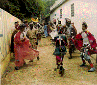

HOME FUNDEF
|  | La agrupación de diablos danzantes de Ocumare de la Costa se da
a sí misma el nombre de Hermandad. En ésta participan
activamente los hombres devotos del Santísimo Sacramento,
así como algunos colaboradores a los cuales llaman Hermanos. La
Hermandad se estructura similar a una organización
militar, con el establecimiento de jerarquías que expresan una dirección
de mando y toma de decisiones. Los diferentes cargos de jerarquía se mantienen
en forma vitalicia, y se clasifican en: General jefe, Primer Capataz;
Segundo y Tercer Capataz, Primer Perrero, Segundo Perrero y por
último, los diablos. Las mujeres sólo participan en la
elaboración de los trajes, los altares y colaboran en la
imposición de los trajes de los diablos.
Pantalón, camisa y capa son elementos básicos en el vestuario de un diablo, sobre los cuales resaltan estampados de elaboración industrial junto a otros accesorios como rabo, cencerros, mandador, reliquias, pañuelo y maraca. Pero es en la máscara donde se concentra todo el poder sobrenatural de un diablo y lo que le hace ritualmente vigente dentro de la fiesta. Las máscaras son de distintas formas, tamaños y colores, siendo sus diseños predominantemente antropomórficos. Los materiales utilizados en su elaboración son principalmente cartón, alambre y papel, entre otros. |
|
En la mañana del miércoles, víspera del Corpus
Christi, el Capataz, el Perrero y otros diablos cumplen con el acto de
rendirse frente a la iglesia, el cual consiste en arrodillarse con los brazos
en cruz, inclinando sus cabezas. Posteriormente se dirigen al Calvario ante el cual se rinden, retirándose luego al lugar de partida.
Al amanecer del día jueves de Corpus Christi los diablos se reúnen y se dividen en dos grupos comandados por el Capataz y el Perrero; luego de un baño en el río, desayunan, y siguiendo las órdenes del Capataz inician la imposición del vestuario. Cada pieza que se colocan tiene que ir rezada por un Credo o un Padre Nuestro. | La salida de los diablos, de uno en uno, se realiza siguiendo el ritmo de la música del cuatrista. En el primer recorrido danzan
libremente por el pueblo hasta escuchar la orden del Capataz. Entonces realizan
el acto de rendir ante la Majestad. Avanzan
hacia el altar que ha sido erigido en la puerta principal de la iglesia, para
luego retirarse danzando, siempre hacia atrás, sin dar la espalda.
Cuando culmina la misa, se inicia la procesión con el Santísimo. El sacerdote avanza, llevando la custodia en sus manos. Los diablos se inclinan ante ella, bailan frente a la Majestad. Al finalizar se retiran siguiendo la misma dirección. Como despedida se representan distintas danzas ante cada altar. Al caer la tarde, el Capataz y el Perrero conducen a cada uno de los diablos a su casa para concluir la celebración del Corpus Christi en Ocumare de la Costa. |